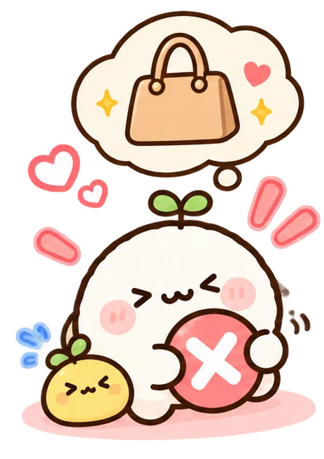
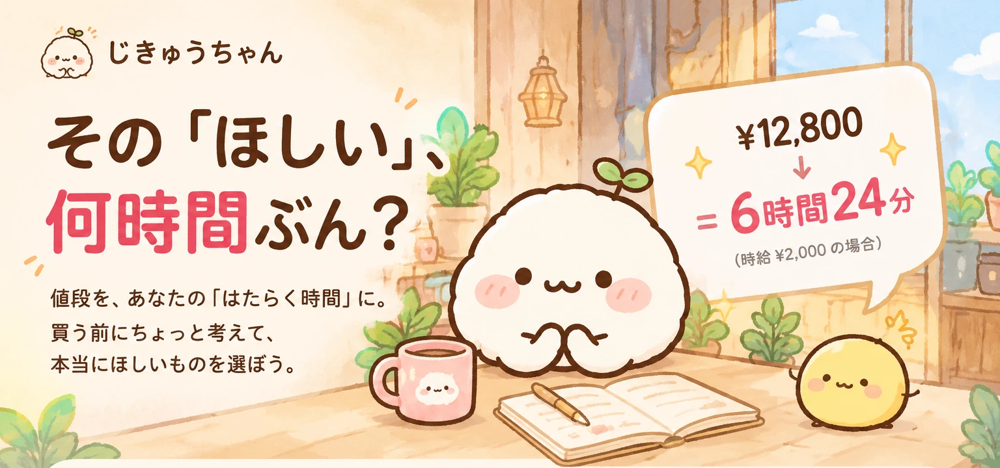
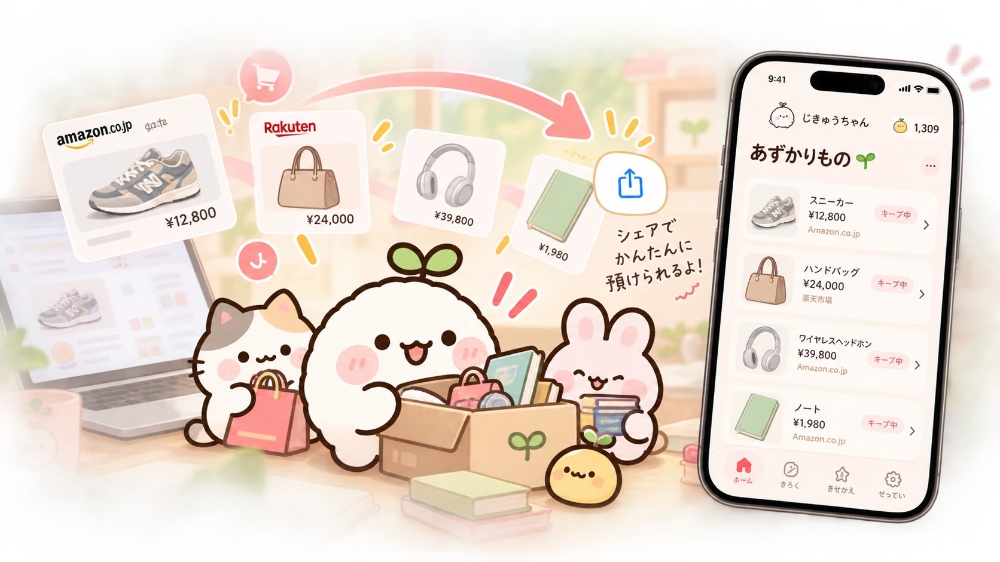
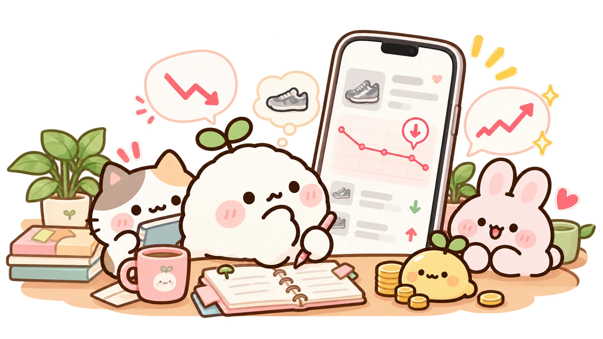
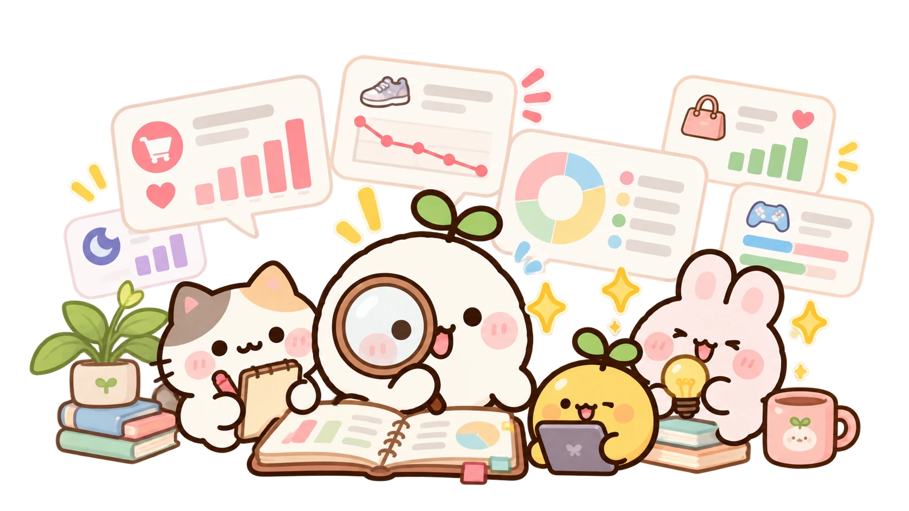

がまんする
今回は、見送ろう。
がまんした買う前に、ちょっと考える。値段を「はたらく時間」にして、本当にほしいものを選ぶiPhoneアプリです。

「ほしい」を選ぶのが、
ちょっと上手になる。
気になる「ほしい」に、ひと休み。
すぐに決めなくても大丈夫。
気になるものを預けて、あとでまた見にいけます。

Amazonや楽天などで見つけたものも、
いったんここに。あとで、いっしょに見てみよう。
少し、待ってみよう。
預けたものは、あとからお値段を見にいける。
前に見たときから変わったかも、
じきゅうちゃんと一緒に振り返れる。
今日の「ほしい」は、
どんな気持ちかな。

ちゃんと考えて、あなたらしく。
どれを選んでも、
自分で考えて決めた答え。
買わないためじゃない。
納得して選ぶため。
選んだ気持ちを、そっと残す。
買ったもの。がまんしたもの。
いったんキープしたもの。
記録が増えるほど、
自分でも気づかなかった選び方が
少しずつ見えてきます。
どれも、あなたの
大切な「ほしい」の記録。
自分でも知らなかった、発見。
これまでの記録から、じきゅうちゃんが
あなたの「ほしい」のクセを
少しずつ見つけていきます。

「私って、こんな選び方をしていたんだ。」
本当にほしいものへ、いっしょに。
買わなかった分を、やりたいことや
本当にほしいものにつなげていく。
小さな選択が、自分にとって大切なものを
少しずつ見つけるきっかけになります。
買う日も、見送る日も、まだ迷う日も。
じきゅうちゃんと仲間たちが、
あなたの「ほしい」を一緒に見つめます。

そばで見守る
ふわふわな生きもの

いっしょに考える
しっかり者のねこ

頑張るあなたに
寄り添ううさぎ


買う前に、ちょっと考える。

がまんするのが正解とは限りません。いったんキープしても、やっぱり買っても大丈夫。じきゅうちゃんは、一度立ち止まって、自分にとって本当にほしいものを選ぶためのアプリです。
値段を、設定した時給で割って時間に換算します。たとえば時給2,000円なら、12,800円は6時間24分です。
Amazon.co.jpや楽天市場などの商品ページから、共有でじきゅうちゃんを選んで取り込めます。商品情報を取得できない場合は、見つからなかったところを自分で入力できます。
2026年10月26日に、iPhone向けの日本語アプリとしてApp Storeで公開予定です。
あなたの記録を、大切に。
最終更新日：
THE WOOSYUME COMPANYは、「じきゅうちゃん」と公式ウェブサイトでの情報の取り扱いを、以下のとおり説明します。
入力した収入・時給、買いものの記録、商品情報、目標、キャラクターや着せ替えの設定は、お使いの端末内に保存します。「ほしい」のクセを見つけるための処理も端末内で行います。商品情報やお値段を確認する際の通信については、下記「外部サービスとの通信」をご確認ください。
保存した情報は、値段を「はたらく時間」に換算すること、選択を振り返ること、目標の進み具合や発見を表示すること、キャラクターとの体験を提供することに利用します。これらの入力内容や記録を、広告のためにアプリから送信することはありません。
広告：広告を表示する際は、Google AdMob（Google Mobile Ads SDK）を利用します。このサービスは、広告の配信・効果測定・不正防止などのため、IPアドレス、端末の識別情報、広告への操作、診断情報などを取得する場合があります。情報の取り扱いは、端末の設定、同意の状態、Googleのポリシーに従います。
Google プライバシーポリシー · Google Mobile Ads SDKのデータに関する説明
商品情報の取得：商品URLを取り込むときや、預けた商品のお値段を確認するときは、商品名・価格・画像などを取得するため、指定したウェブサイトや画像の配信元に接続します。接続先にはIPアドレスやアクセスしたURLなどが伝わります。接続先での情報の取り扱いは、そのサービスのポリシーに従います。
シェア：シェアカードなどを共有する場合は、あなたが選んだ内容を、選択した共有先へ渡します。共有する前に、カードに含まれる情報と共有先をご確認ください。
お知らせ機能は、通知を許可した場合に利用します。通知の許可は、iPhoneの設定から変更できます。保存した記録は、アプリの設定にあるデータのリセット機能で削除できます。端末のバックアップに含まれるデータは、Appleの設定とポリシーに従って管理されます。
このウェブサイトには、独自のアクセス解析ツール、広告、トラッキング用Cookie、個人情報を入力するフォームを設置していません。GitHub Pagesで公開する場合、配信元のGitHubが、サイトの提供や安全な運用のためにIPアドレスなどのアクセス情報を取り扱うことがあります。
機能や情報の取り扱いが変わった場合は、このページを更新します。最新の内容と更新日は、このページでご確認いただけます。
プライバシーに関するお問い合わせ窓口は、現在準備中です。窓口を公開する際は、公式ウェブサイトでお知らせします。